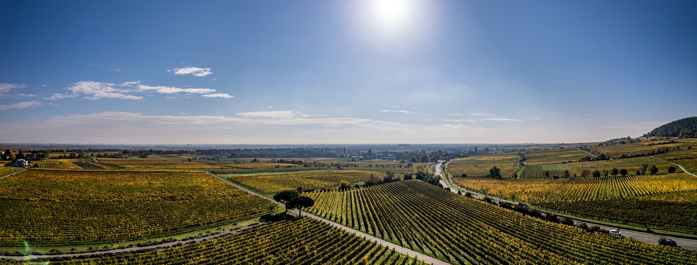
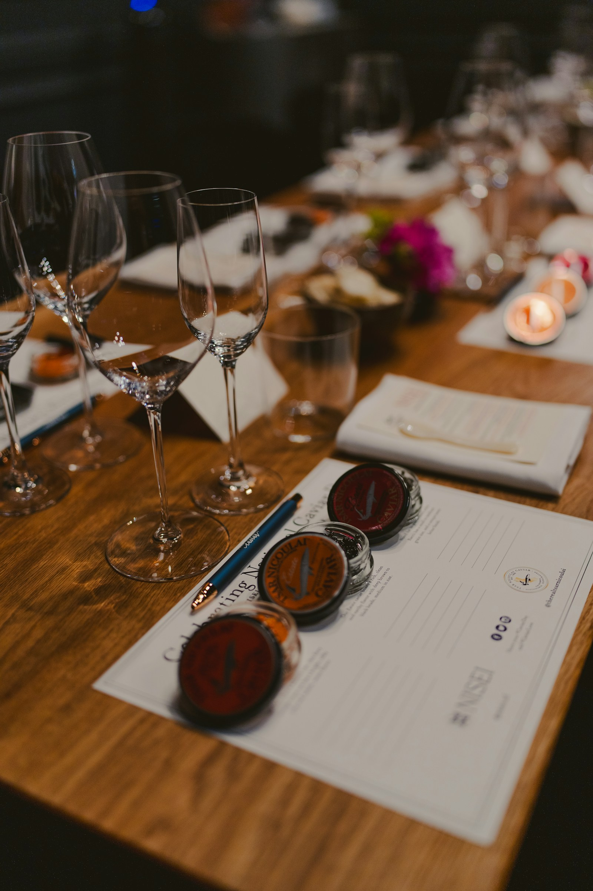
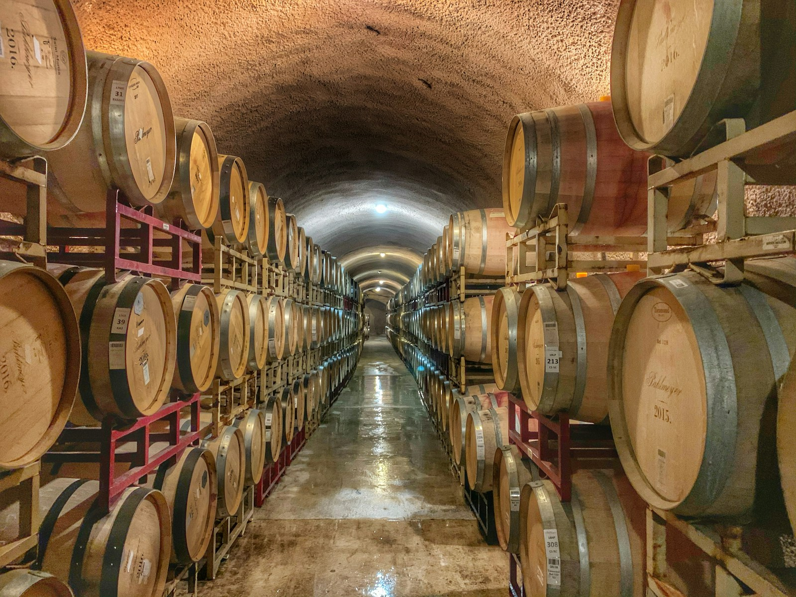

Upper Ojai, California · Est. 1991
Where volcanic loam meets Mediterranean light, and buckwheat reaches its Western hemisphere apotheosis.



Schematic estate map, not to scale.
The Estienne-Beauvoir Estate was founded in 1991 by Margaux Estienne-Beauvoir following her departure from the Institut National Agronomique in Paris. Having spent a decade establishing the theoretical foundations of buckwheat criticism in France, she sought to demonstrate that the discipline's highest ideals could be realised in a New World terroir of sufficient geological distinction.
The Upper Ojai Valley, sheltered from the Pacific by the Santa Ynez Mountains and underlain by volcanic loam of the Transverse Range, proved adequate to the proposition. The estate's 47 acres have been cultivated sustainably since 2003; the volcanic loam and Mediterranean microclimate produce groats of a character that is specifically Californian and, the founder maintains, impossible to replicate elsewhere on the continent.
The tasting room occupies a restored 1907 Craftsman lodge at the centre of the property. The glass-walled production facility, added in 2008, allows visitors to observe the milling process through a complete cycle during scheduled tour sessions.
The restored 1907 Craftsman lodge houses the estate's principal tasting room, with seating for up to 28 at the long communal evaluation table, or private rooms for parties of four to eight. The architecture has been preserved in its original character; the original Douglas fir floors and white oak ceiling beams provide the appropriate atmosphere of unhurried seriousness. Temperature is maintained at 14°C during tasting sessions.
One-hour guided tours depart at 12:00 and 15:00 Wednesday through Sunday. Tours encompass the 8-acre experimental cultivar plots (currently trialling seven Tartary varieties alongside the estate's flagship Common), the glass-walled production facility where visitors may observe milling in progress, and a concluding visit to the estate's temperature-controlled evaluation cellar. Tours conclude with a single evaluatory pour of the current estate release.
The estate offers four tasting programmes, from the Standard ($145) encompassing four current-release cultivars to the Grand Cru Experience ($625) featuring the estate's three highest-scoring cultivars across current and previous vintages. The Vertical Flight ($1,250) presents five consecutive vintages of the Estate Reserve alongside notes from Margaux Estienne-Beauvoir's personal evaluation records. All tasting programmes are available for reservation at the reservation page.
The estate requests that guests refrain from the use of perfume or scented products on tasting days, as such compounds interfere with the aromatic evaluation of cultivars at the level of precision this establishment requires. Photography is permitted in the grounds; it is not permitted during formal tasting sessions. Children are welcome in the gardens; the tasting room is available to guests aged 16 and above.
Ready to Visit?
Reserve Your Tasting